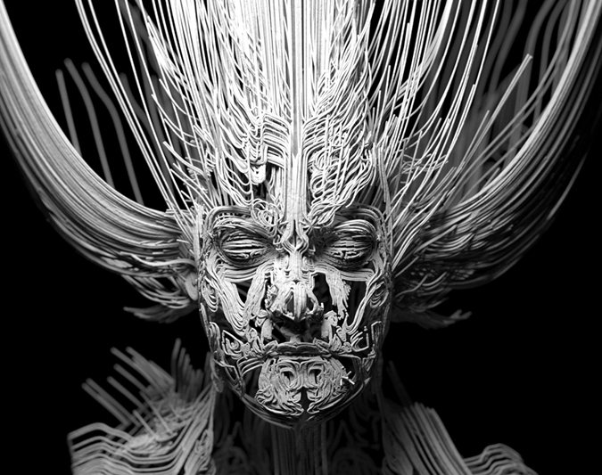
借助 Maya 的 Paint Effects，能够以有趣、轻松的方式创建复杂的曲线形状。本教程将向您介绍如何组合使用以下各项来渲染抽象头像：Maya 的 Paint Effects 笔刷、渲染曲线和_覆盖集_。
非常感谢 Lee Perry Smith 提供本教程中使用的头部扫描模型。
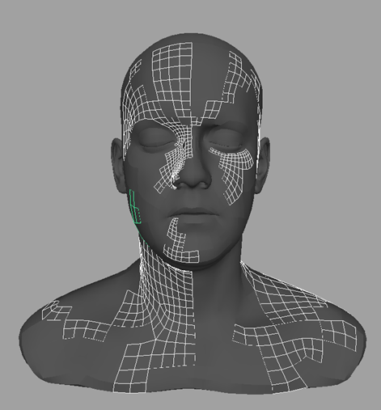
选择整个模型，然后转到“卡通 > 指定轮廓 > 添加新的卡通轮廓”(Toon > Assign Outline > Add New Toon Outline)。
隐藏头部模型。选择卡通轮廓 (pfxToonShape1)，并减小“线宽”(Line Width)，使它如下图中一样清晰可见。在此例中，使用的值为 0.005。
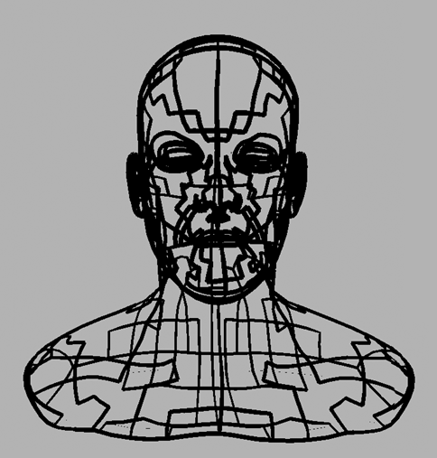
卡通轮廓
我们可以按原样将卡通轮廓转化为曲线。但是，我们可以先将 Paint Effects 笔刷添加到卡通轮廓以使其看起来更有趣。
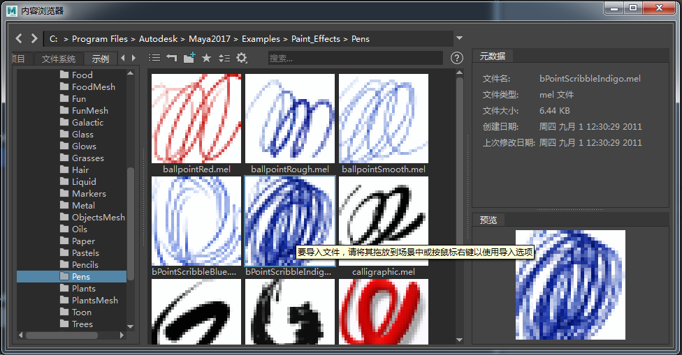
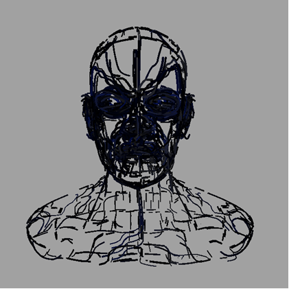
“bpointScribbleIndigo”笔刷指定给卡通轮廓（全局比例(Global Scale)：1）
| 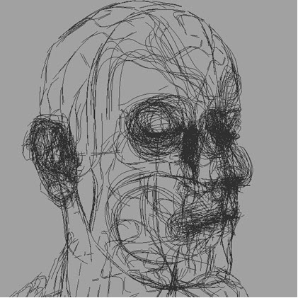 | 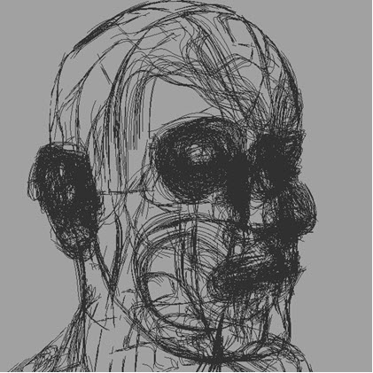 |
| 每步长管数(Tubes Per Step)：1 | 每步长管数(Tubes Per Step)：3 |
对 Paint Effects 效果满意后，我们就可以将其转化为曲线。选择 bpointScribbleIndigo 笔刷后，转到“修改 > 转化 > Paint Effects 到曲线”(Modify > Convert > Paint Effects to Curves)。
现在，我们需要使曲线可以通过 MtoA 进行渲染。为此，我们需要为曲线创建一个覆盖集。选择曲线，然后为其创建 Maya 集 -“创建 > 集 > 集”(Create > Sets > Set)。
更快、更高效地渲染多条曲线的方法是使用曲线收集器。
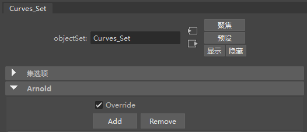
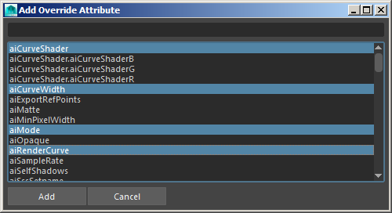
在此集的属性编辑器中，新创建的属性应显示在“Arnold”的“附加属性”(Extra Attributes)下。
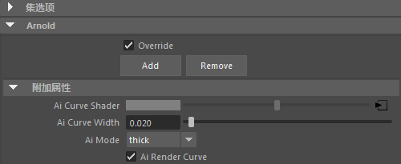
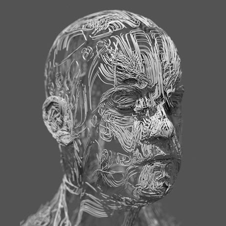
就是这样。现在可以开始进行照明和渲染了！享受其中的乐趣，并尝试使用不同的 Paint Effects 笔刷和变形器设置来获得一些有趣的结果。
| 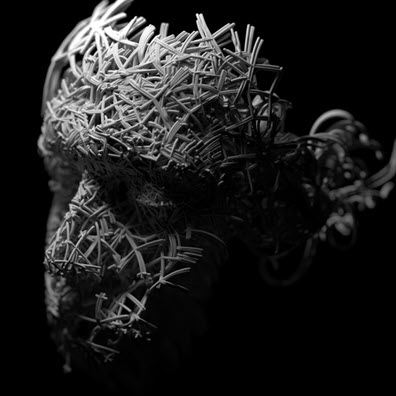 | 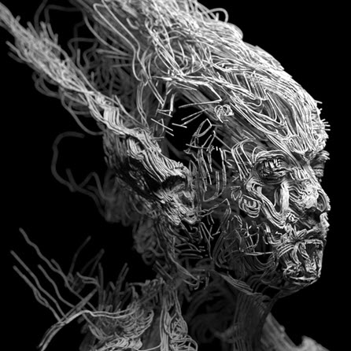 | 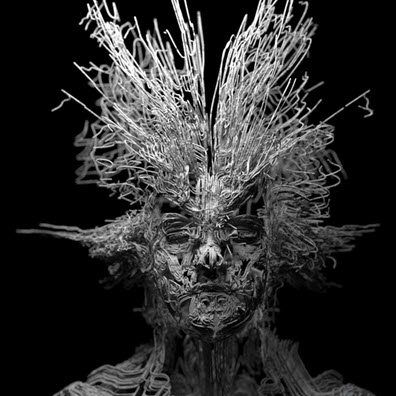 |
更多示例